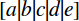

The deprecated MathML <mfenced> element used to provide the possibility to add custom opening and closing parentheses (such as brackets) and separators (such as commas or semicolons) to an expression. It has been removed from the latest MathML standard and modern browsers no longer support it. Use the {{MathMLElement("mrow")}} and {{MathMLElement("mo")}} elements instead.
class, id, styleclose")" and any white space is trimmed.hrefmathbackground#rgb, #rrggbb and HTML color names.mathcolor#rgb, #rrggbb and HTML color names.open"(" and any white space is trimmed.separators,)Sample rendering:
Rendering in your browser:
<math>
<mfenced open="{" close="}" separators=";;,">
<mi>a</mi>
<mi>b</mi>
<mi>c</mi>
<mi>d</mi>
<mi>e</mi>
</mfenced>
</math>
,)Sample rendering: 
Rendering in your browser:
<math>
<mfenced open="[" close="]" separators="||||,">
<mi>a</mi>
<mi>b</mi>
<mi>c</mi>
<mi>d</mi>
<mi>e</mi>
</mfenced>
</math>
The <mfenced> element is no longer part of the latest MathML standard. Use the {{MathMLElement("mrow")}} and {{MathMLElement("mo")}} elements instead, or, for backwards compatibility, see mathml-polyfills/mfenced.
{{Compat("mathml.elements.mfenced")}}